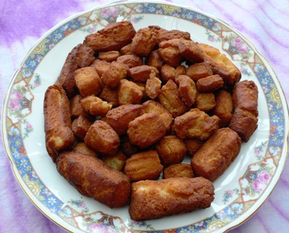

African Foods.
African cuisine is a generalized term collectively referring to the cuisines of Africa. The continent of Africa is the second largest landmass on Earth, and is home to hundreds of different cultural and ethnic groups. This diversity is also reflected in the many local culinary traditions in terms of choice of ingredients, style of preparation and cooking techniques.
SUYA
Suya is a delicacy is West Africa and is an extremely popular street food. The spicy skewered meat is generally made from beef, chicken, ram or innards that have been marinated.
The meat is thinly sliced and then put into a marinade called Yaji. This marinade can include a variety of spices not limited to ginger, pepper, salt and groundnut cake. After marinating, the suya is barbecued and served with onions, dried peppers and spices.
Guluf Rice
Clean and cut fish in halves. Fry the fish in the vegetable oil until both sides are brown. Remove fish and add onions, fresh tomato and paste to the hot oil and fry until brown. Pour water and bring to boil, then include cabbage, carrots, bay leaf, add seasonings, reduce heat and simmer for 20 mins. Remove vegetables and add the rice while continuously stirring. Reduce heat and cover the pot. Simmer for 10 mins. Benachin is sometimes referred to as cheebu / chebu jen in Senegalese.
There are few other ingredients we also use like cassava boiled with the carrots, tamarin mix separately with lemon, salt and pepper. It is spicy.
Deebee

This is one of the best food in west Africa. It is called dibi and it is well consumed by the African population. It is made with chopped grilled meat, onion and other type of ingredients. It can consumed by itself or with rice and potato.
Fufu
Fufu is made from boiled unripe plantain and cassava, which is pounded and kneaded. It is pounded using a wooden pestle and mortar.
Fufu is a starchy staple across Africa. In Ghana it is prepared with cassava, plantain, cocoyam and yam. In some countries, it is prepared with potatoes, bananas, cornmeal and semolina.
Fufu can be eaten with a variety of soups such as, palm-nut, peanut, and light soups among others.
Some Ghanaians love fufu so much that a day without fufu equals starving. However, the tedious job associated with pounding fufu has made many given up on their favorite dish.
One could pound fufu for about 30 minutes, whilst another navigates the mixture to achieve a smooth texture.
Some children and even adults, go into hiding whenever it’s time to pound fufu for the family. Others feign sickness to escape pounding fufu. The funny aspect is, they come back home to enjoy after it’s pounded and ready to eat.
Everybody loves fufu but nobody wants to be tasked with the job of pounding it. Over time, food bloggers and caterers have been exploring ways fufu could be enjoyed without the hustle of pounding and it has paid off.
Gateaux

You will not find any big familial event in Guinea without theses cookies called «gateaux secs” in French! In fact, they are African biscuits served at any big celebrations like baptisms (Naming ceremonies) or weddings. What’s good about this recipe is that you can make them in advance because well preserved; they are eatable during 2-3 weeks.
Gateaux Ingridients
- 1. kg Wheat flour
- 2. 250 gr of suggar
- 3. 200 gr of margarine or butter (in Guinea we use the margarine)
- 4. eggs
- 5. tablespoon of pineapple juice or gloria canned Milk
- 6. bags of baking powder or 42gr of baker's yeast
- 7. pinch of salt
- 8. litre of frying oil